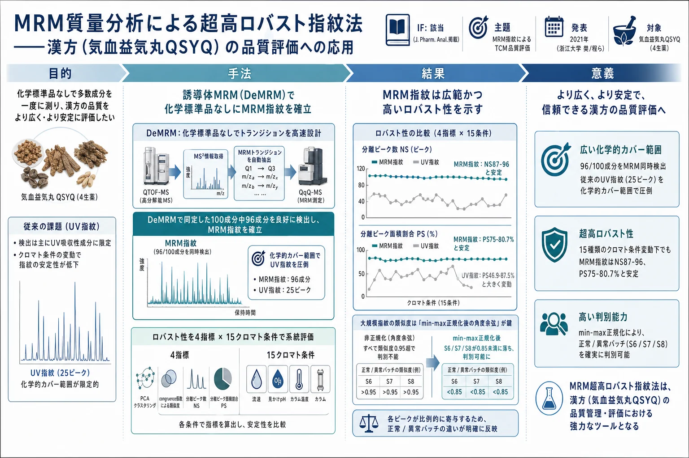
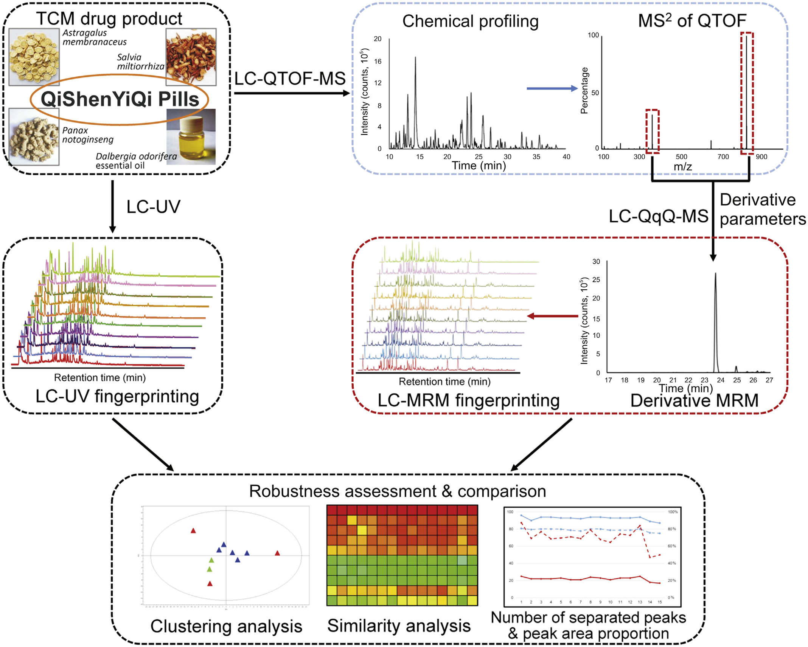
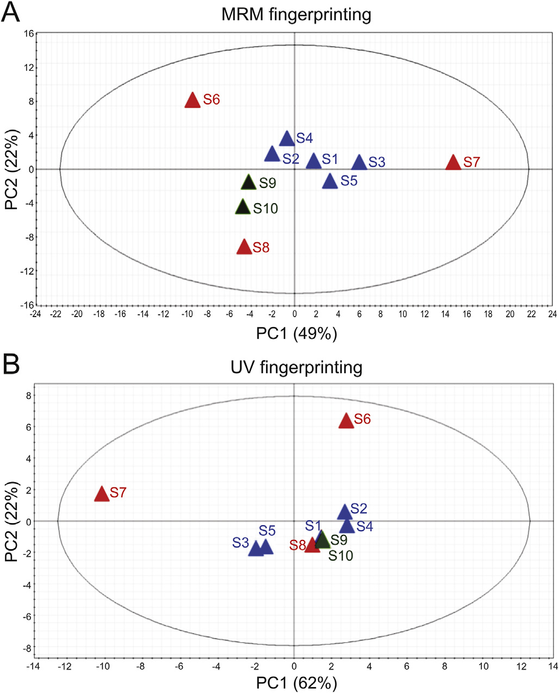
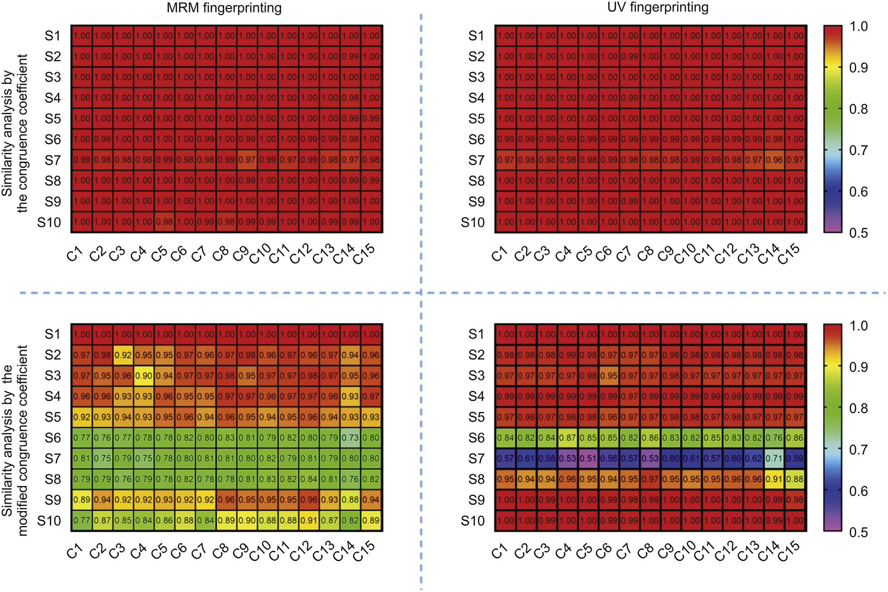
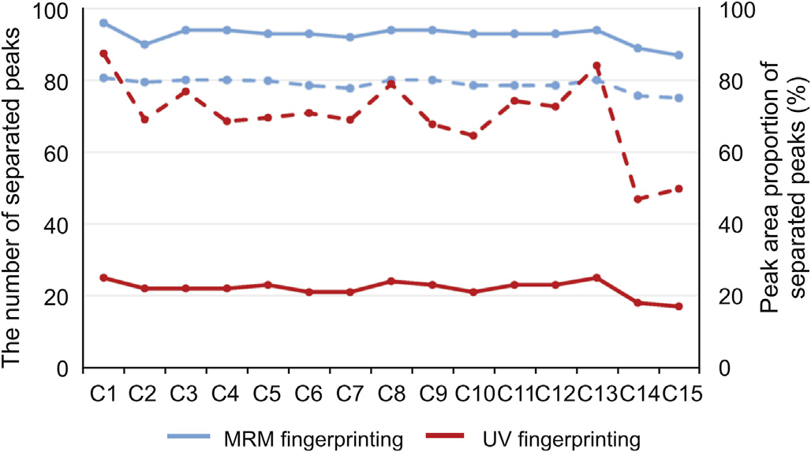

MRM質量分析による超高ロバスト指紋法——漢方（気血益気丸QSYQ）の品質評価への応用

<!-- 方針: ほぼ全訳＋必要に応じた補足。原文（英語・原著論文）構成に沿って訳出。本文の[N]は原文の番号引用に対応し末尾の参考文献にリンクする。図1〜図4は原本PDFの埋め込み画像をPyMuPDFで抽出しReadで確認のうえ全訳キャプションで埋め込んだ。Table S1-S5・Fig S1-S6は補足資料(本体PDFに無し)のため「補足資料参照」と明記。Table 1(試料情報)は本文表として再現。「> 補足:」は訳者注。 -->
書誌情報
- 原題: An ultra-robust fingerprinting method for quality assessment of traditional Chinese medicine using multiple reaction monitoring mass spectrometry
- 著者: Zhenhao Li（李振豪）・Xiaohui Zhang・Jie Liao・Xiaohui Fan（樊晓晖）\・Yiyu Cheng（程翼宇）\\*（浙江大学 薬学院 製薬情報学研究所, 杭州 310058, 中国）
- 掲載: Journal of Pharmaceutical Analysis 11 (2021) 88–95. DOI: 10.1016/j.jpha.2020.01.003（オープンアクセス, CC BY-NC-ND）
- 種別: 原著論文（Original article）
- インパクトファクター: 該当（J. Pharm. Anal. は分析化学分野の高IF誌）
- 助成: 国家自然科学基金（81803714）／中央高校基本科研業務費（2019QNA7041）
補足: 本稿は、漢方（中薬）の品質を クロマトグラフィー指紋（fingerprint、フィンガープリント） で評価する分野で、質量分析の MRM（多重反応モニタリング） を初めて本格的に「指紋づくり」に持ち込んだ研究である。従来の指紋法は、HPLCにUV検出器をつなぎ、クロマトグラムのピークパターンを「その生薬の化学的な指紋」として品質判定に使う。だが①UVで見えない成分が多い（カバー範囲が狭い）、②分析条件（流速・pH・カラム等）を少し変えるとパターンが崩れる（ロバスト性が低い）、という弱点があった。本研究は、MRM（前駆イオン→生成イオンのペアで特定成分だけを狙い撃つMS測定） を使えば約100成分を同時に、かつ条件変化に強く検出できることを、心不全に広く使われる中成薬 気血益気丸（QSYQ） で実証した。日本の読者には、「漢方エキス製剤の品質を、UVクロマトの代わりにMS/MSの狙い撃ち測定で“化学的指紋”を作って判定する」新しいQC分析法の提案、と考えると位置づけが分かりやすい。
用語の整理（訳者による前置き）
- MRM（multiple reaction monitoring、多重反応モニタリング）＝三連四重極(QqQ)質量分析で、前駆イオン→生成イオンの特定ペア（トランジション）だけを通す測定。高い特異性・感度をもつ。
- 誘導体MRM（DeMRM、derivative MRM）＝著者らの手法。QTOF-MSのMS2情報からMRMトランジションを化学標準品なしで導出する。
- QSYQ（QiShenYiQi Pill、気血益気丸／滴丸）＝黄耆(HQ)・丹参(DS)・三七(SQ)・降香(JX)精油の4生薬由来の中成薬。心機能障害に使用。
- congruence係数（合同係数）＝2つの指紋の類似度を、ベクトルの角度の余弦（cosine）で定量化する指標。min-max正規化＝各ピーク面積を0〜1に正規化する処理。
- NS（number of separated peaks、分離ピーク数）／PS（peak area proportion of separated peaks、分離ピーク面積割合）＝分離度1.0以上のピークの数／面積割合。ロバスト性の直接指標。
- PCA＝主成分分析。LC-QTOF-MS＝液体クロマト–四重極飛行時間型MS。LC-QqQ-MS＝液体クロマト–三連四重極MS。OVAT＝一度に一変数（one-variable-at-a-time）法。
要旨（Abstract）
クロマトグラフィー指紋法は、漢方（TCM）の品質・化学的同等性を評価する不可欠なツールと認識されてきた。しかし、このパターン指向のアプローチには、化学的カバー範囲とロバスト性の点でなお弱点がある。本研究では、約100成分を同時に検出して品質評価する MRMベースの指紋法 を提案した。化学標準品に依存せずMRMトランジションを高速設計する 誘導体MRM（DeMRM） アプローチを用い、それに基づいて大規模指紋法を効率的に確立した。この手法を、漢方由来の医薬品である 気血益気丸（QSYQ） で例示し、そのロバスト性を4指標——主成分分析（PCA）によるクラスタリング解析、congruence係数による類似度解析、分離ピーク数、分離ピークの面積割合——で系統的に評価した。従来のUVベース指紋と比較して、MRM指紋は、試験した正常/異常QSYQ試料に対してより優れた判別能を提供しただけでなく、異なるクロマト条件（流速・見かけpH・カラム温度・カラム）下でより高いロバスト性を示した。結果はまた、多数のピークを含むこのような大規模指紋では、min-max正規化後の角度余弦 の方が、非正規化アルゴリズムより判定基準の設定に適することを示した。この概念実証応用は、MRM技術を適切な類似度解析指標と組み合わせることで、漢方の品質評価に対し高感度・高ロバスト・包括的な分析アプローチを提供できることの証拠を与える。
- キーワード: 多重反応モニタリング／質量分析ベース指紋／品質評価／漢方（TCM）／ロバスト性評価
1. 序論
一次医療のみならず、創薬・医薬品開発においても漢方（TCM）への関心が高まっている。合成薬や高純度薬と対照的に、TCMは一般に無数の異なる植物化学成分を含み、様々な生物学的標的に相加的・相乗的効果を及ぼしうる[1,2]。それゆえTCMは、糖尿病や心血管疾患のような慢性・多因子性疾患の治療に大きな可能性をもつ[3,4]。しかし、その安全性・有効性を実証する科学的データや、品質・規制評価のエビデンスに基づく標準はしばしば不足している。加えて、これらの天然由来の混合物は、産地・栽培・収穫後処理・製造工程の違いにより、かなりのバッチ間変動を示しうる[5]。それゆえ品質管理は、TCMの安全性・有効性・一貫性を保証するうえで重要な役割を果たす。
指紋解析はその登場以来、TCMの品質・化学的同等性を評価する強力なツールと認識されてきた。分光法やクロマトグラフィーに基づく多数の指紋法が発展し[6,7]、なかでも液体クロマトグラフィーは指紋生成の最も確立された方法の一つである[8]。生薬全体のごく一部の割合しか代表しない少数のマーカー化合物の測定と比べ、クロマト指紋は検出可能な全成分を考慮して特徴的な化学プロファイルを確立し、必ずしも参照化合物を必要とせず、TCMの品質のより包括的な要約を提供する。今日までこのパターン指向のアプローチは、TCMおよびその由来医薬品の産地同定[9]・真贋鑑別[10]・工程管理[11]・品質評価[12,13] にますます用いられてきた。
TCM品質評価の理想的手法として広く受け入れられているものの、クロマト指紋にはなお限界がある。たとえば、多数の指標（congruence係数など）が2指紋間の類似度を定量比較するのに使われてきた[7]。しかし、これらのパラメータは、値を支配的に決める大きなピークがある場合や、指紋のデータベクトルの方向が類似する場合に、実際の化学的同等性を評価できないことがある[10,14-16]。これに対処するため、類似度解析の方法/アルゴリズムを修正する[10,17,18]、ピークに適切な重みを付与する[15,19] などの方法が提案されてきた。クロマト指紋のもう一つの欠点は ロバスト性、すなわち方法パラメータの小さな意図的変化に影響されない分析法の能力である[20]。一般に、クロマト性能は流速・見かけpH・カラム温度・機器など多くの因子に影響される。それゆえ、伝統薬/生薬の指紋は、小さな変動の範囲内の試験条件でしか十分なロバスト性を保てず[21-23]、試験結果の再現や施設間比較を困難にする。バックグラウンド/保持時間ドリフト補正[24,25]、ピークアラインメント・抽出[26-29] のアルゴリズムはロバスト性改善に役立ちうるが、分析関連因子がより大きく変動すると無力化しうる。さらに、最も一般的な検出器であるUVやDAD（ダイオードアレイ検出器）に基づく指紋は、感度・分解能・カバー範囲が比較的低い。
高感度・高選択性を特徴とする質量分析（MS）は、伝統薬研究の不可欠なツールとなった[30,31]。様々なMSスキャンモードのうち、MRM（多重反応モニタリング） は関心のある特定成分を検出する信頼できる方法とされる。MRMの前駆–生成イオンのフィルタリング過程は、高い特異性・感度と、分析条件の変動への耐性（非選択イオンはすべて除去される）を提供する。さらに、TCM研究、特にMRMトランジション設計における大きな障害である化学標準品の欠如は、擬似ターゲットMRM[32]・誘導体MRM[33]・平行反応モニタリング[34] などいくつかの修正MRM技術で部分的に克服されてきた。この状況は、TCM品質評価用の選択的・高感度・高ロバストな指紋開発におけるMRMの実現可能性を際立たせる。しかし、MRMベース指紋を報告する研究は少なく、このような大規模指紋の方法論・類似度解析アルゴリズムもなお不足している。
ここで我々は、理想的には数百成分を同時にモニタリングできる、TCM品質評価用のMRMベース指紋法を提案した。実験ワークフローを図1に模式的に示す。TCM試料をまず LC-QTOF-MS で化学同定し、同定成分のMRMトランジションを、参照標準なしにQTOF-MSのMS2に基づいて効率的に開発し、それを用いて LC-QqQ-MS でMRM指紋を生成した。指紋のロバスト性を4指標——PCAによるクラスタリング解析、congruence係数による類似度解析、分離ピーク数（本稿では分離度1.0以上のピークと定義）、分離ピークの面積割合——で系統的に調べた。加えて、試料のLC-UV指紋を生成・解析し、LC-MRM指紋の結果と比較した。
気血益気丸（QSYQ） は心機能障害に広く処方されるTCM医薬品で、黄耆（Huangqi, HQ）・丹参（Danshen, DS）・三七（Sanqi, SQ）・降香（Jiangxiang, JX）精油の4生薬由来である。JX精油の揮発性成分は従来のLC-UVでほとんど検出できない[13,35] ため、4生薬の品質を1回の分析で反映できる分析法の開発は意義がある。そこで我々はこの複雑な製剤にMRM指紋を適用し、提案法が異なる種類の成分を高感度・高ロバストに検出でき、この特許薬の品質をより包括的に評価できることを実証した。

2. 実験
2.1 材料・試薬
HPLCグレードのアセトニトリル（Merck）・ギ酸（Roe）。超純水はMilli-Q Plusで調製。参照標準（ダンシェンス・カフェ酸・サルビアノール酸B/C・ロスマリン酸・フェルラ酸・アストラガロシドIV・オノニン・フォルモノネチン・カリコシン・ノトジンセノシドR1・ジンセノシドRg1/Rb1/Rb3/Re/Rd）はWinherb Medical Technology（上海）から購入。QSYQ中間体10バッチ（正常5＋異常5）はTasly（天津）が提供（試料情報は表1）。QSYQ中間体の調製工程は補足資料に詳述。
表1 気血益気丸（QSYQ）の試料情報
| No. | HQ | DS | SQ | JX | 説明 |
|---|---|---|---|---|---|
| S1 | Batch 1 | Batch 1 | Batch 1 | Batch 1 | 異なるバッチのHQ・DS・SQ・JXで製造した 正常 中間体 |
| S2 | Batch 2 | Batch 2 | Batch 2 | Batch 2 | （同上） |
| S3 | Batch 3 | Batch 3 | Batch 3 | Batch 3 | （同上） |
| S4 | Batch 4 | Batch 4 | Batch 4 | Batch 4 | （同上） |
| S5 | Batch 5 | Batch 5 | Batch 5 | Batch 5 | （同上） |
| S6 | Batch 1ᵃ | Batch 1 | Batch 1 | Batch 1 | S1と同一原料で製造した 異常 中間体。各試料は事前抽出された異常生薬を1つもつ。S10はJXを添加せず |
| S7 | Batch 1 | Batch 1ᵃ | Batch 1 | Batch 1 | （同上） |
| S8 | Batch 1 | Batch 1 | Batch 1ᵃ | Batch 1 | （同上） |
| S9 | Batch 1 | Batch 1 | Batch 1 | Batch 1ᵃ | （同上） |
| S10 | Batch 1 | Batch 1 | Batch 1 | / | （JX無添加） |
HQ=黄耆（Astragalus membranaceus）／DS=丹参（Salvia miltiorrhiza）／SQ=三七（Panax notoginseng）／JX=降香（Dalbergia odorifera）精油。ᵃ 事前抽出された人為的な異常材料。
2.2 試料調製
正確に秤量したQSYQ中間体（1 mg）を10%含水メタノール1 mLに溶解。30秒ボルテックス・10,000 rpm×10分遠心後、上清を指紋解析に供した。参照標準溶液はメタノールで個別調製し化学同定結果を照合。
2.3 装置
化学同定：Acquity UPLC（Waters）＋Triple TOF 5600plus MS（AB SCIEX）。負イオンESIモード（スキャン範囲 m/z 100–1500、ソース電圧4.5 kV、ソース温度550 °C、カーテンガス30 psi、ガス1/2（N₂）50 psi）。IDA媒介MS2のDP/CE/CESはそれぞれ80 V/40 eV/20 eV。
MRM指紋：Agilent 1200 HPLC＋API 4000 QqQ-MS（AB SCIEX）。ソース温度500 °C、カーテンガス30 psi、ガス1 40 psi、ガス2 45 psi、イオンスプレー電圧4.0 kV。各分析種のMSパラメータはQTOF-MSのMS2から導出（化学標準品での通常最適化なし）。96分析種のMRMトランジションは表S1（補足資料）。
LC-UV指紋：Agilent 1100 HPLC＋可変波長検出器（VWD、203 nm）。
最適クロマト条件：Zorbax SB C18（1.8 µm, 4.6×100 mm, Agilent）30 °C、移動相A（0.1%ギ酸水）・B（アセトニトリル）、流速0.4 mL/min、リニアグラジエント（0–5分 10→20%B／5–40分 20→55%B／40–50分 55→60%B／50–60分 60→90%B／60–65分 90→100%B／65–70分 100%B）、注入10 µL。ロバスト性試験は OVAT法 で15条件（C1–C15、表S2）——カラム温度 20/25/30(C1最適)/35/40 °C、流速 0.2/0.3/0.4(C1)/0.5/0.6 mL/min、ギ酸濃度 0.03/0.05/0.1(C1)/0.2/0.3%、カラム 1.8µm 4.6×100mm(C1) / 3.5µm 2.1×150mm(C14) / 5µm 4.6×250mm(C15)。
2.4 ロバスト性評価
クラスタリング解析・類似度解析・分離ピーク数(NS)・分離ピーク面積割合(PS)で評価。PCAで指紋データを可視化し正常/異常試料のクラスタ傾向を各条件で評価。congruence係数で類似度を定量化（標準角度余弦[7] とmin-max正規化後の角度余弦の両方で類似度指数を計算）。NSは分析法が捉えうる化学情報を、PSはその情報が正確に得られる割合を反映。
2.5 MRMトランジションの設計
MRMトランジション開発は一般に労力を要し、カバー範囲は化学標準品の入手性に制約される。著者らの先行研究[33,41] に基づき、標準品に依存せずQTOF-MSのMS2パラメータをQqQ-MSのMRMパラメータへ高速変換する 誘導体MRM（DeMRM） 法を用いた。4段階からなる——①QSYQをLC-QTOF-MSで非ターゲットプロファイリング・IDAベースMS2。②MS2情報（前駆–生成イオンペア＝通常MS1/MS2で最強イオン、対応するDP/CE）をMRMトランジションの初期パラメータに選定。③代表的分析種で高応答を得るためLC-QqQ-MSでDP/CEを適度に最適化（影響の小さいEP/CXPは先行研究[33,41] に従い−10 V/−12 Vに固定）。④各分析種のMRMトランジションを初期パラメータと最適化結果から確立しQSYQのMRM指紋を生成。付加イオンを前駆イオンに使う成分（化合物7・9等）はデクラスタリング回避のためDPを比較的低く調整。全過程でscheduled MRMアルゴリズム[42]（予想保持時間付近のみモニタリング）を用いて感度を向上。同定100成分中96成分がDeMRM法で良好なMS応答を示し、これらをMRM指紋解析に選定（QSYQの化学情報の大半を反映）。MRMトランジションは表S1（補足資料）。
2.6 方法バリデーション
LC-MRM・LC-UV指紋法を最適条件下で、日内・日間精度、繰返し性、安定性で系統的にバリデート。指紋解析のピーク選択は2原則——(1)全試料に共通、(2)分離度1.0以上。試料1でQC試料を調製。日内精度は1日6回、日間精度は3日連続で1日2回、繰返し性は6反復、安定性は4 °C保管で0/2/4/8/12/24時間に解析。
2.7 データ処理・統計解析
QTOF-MS/MRM指紋/UV指紋の生データはそれぞれPeakView 1.2.0.3／Analyst 1.51／ChemStation B.04.02で処理。多変量データはSIMCA-P 14.1でPCAクラスタリング（成分のピーク面積を使用）。
3. 結果と考察
3.1 QSYQの化学成分の特性評価
UPLC-QTOF-MSとHPLC-VWDの代表クロマトグラムは図S1（補足資料）。高分解能MSデータから分子式を生成し、文献・データベース照合で推定同定、MS2フラグメンテーションで確認。事前分類[43]・診断イオンフィルタリング[44]・TFNT（targeted following nontargeted）アプローチ[41] で重複排除を加速。オンラインMS2データベース（GNPS・MassBank・HMDB・MassGraph）も直接同定に使用。計 100成分 を同定/暫定同定——サポニン45・フェノール酸19・フラボノイド14・アントラキノン1・フェナントラキノン1・その他20（うち16成分は参照標準との保持時間・マススペクトル比較で明確に同定）。
例：HQ由来のカリコシン（15）は、主要な擬分子イオン [M-H]⁻ が m/z 283.0608（式C₁₆H₁₂O₅）。m/z 268.0361 はメトキシ基のCH₃脱離、m/z 239.0331・211.0384 はCH₄脱離後の1個・2個のCO連続中性脱離、m/z 135.0085・91.0198 はC環のレトロ・ディールス・アルダー（RDA）反応（[M-H-C₉H₈O₂]⁻）とそれに続くCO₂脱離による特徴イオン。保持時間・マススペクトルが参照標準カリコシンと一致し、化合物15をカリコシンと明確に帰属（フラグメンテーション経路は図S2）。100ピークの特性評価・詳細MS情報は表S3（補足資料）。
3.2 提案法のバリデーション
LC-MRM・LC-UV指紋法のバリデーション結果（ピーク面積のRSDで表現）は表S4・S5（補足資料）。MRM指紋：日内・日間精度、繰返し性、安定性の変動範囲はそれぞれ 0.70–13%、0.81–15%、0.72–14%、0.42–13%。UV指紋：0.091–4.2%、0.22–5.6%、0.21–5.0%、0.21–5.8%。質量分析の性質上MRMのRSDはUVより大きいが許容水準内。両法とも妥当な信頼性でQSYQ品質評価に適用可能。
3.3 類似度解析とロバスト性評価
バリデート済み指紋法をQSYQ中間体10バッチの一貫性評価に適用。4指標（クラスタリング・類似度・NS・PS）で正常/異常バッチの差異・類似を特性評価し、異なる試験条件下のロバスト性を評価。
3.3.1 PCAによるクラスタリング解析
図2Aのとおり、MRM指紋は最適条件(C1)で優れた判別能を示した。異なる原料バッチで製造された正常試料S1–S5はPCAスコアプロットで1群にクラスタし、各々異常生薬をもつ異常試料S6–S10はS1や他の正常試料からよく区別された。この高い判別能は、JX精油中の成分を含め各構成生薬から多数の成分を同時検出できるMRM指紋の広いカバー範囲による。対照的にUV指紋の判別能は大きく劣った。図2Bのとおり、S6（異常HQ）とS7（異常DS）のみS1から区別でき、S8（異常SQ）・S9（異常JX）・S10（JX無し）はS1と同群になった。これは主に、SQのサポニンが203 nmで弱い末端吸収しかもたず、JX精油の揮発性成分が低極性・弱UV吸収でLC-UVでほとんど検出できないため[13]。

条件C2–C15での結果（図S3–S6）では、カラム温度・流速・ギ酸濃度・カラムの変化はMRM・UV指紋のクラスタリングに比較的軽微な影響しか与えず、条件に鈍感だった。ただし一部条件でS9・S10がMRM指紋で正常試料とうまく区別できなかった（JX精油の成分が9つしか検出されず寄与が小さいため）。PCAスコアプロットは主成分上の（非）類似のみを反映しクロマト法の品質情報は与えないため、より多くの指標が必要。
3.3.2 congruence係数による類似度解析
congruence係数は角度の余弦を計算して2指紋の類似度を定量化する。一般に試料集合の平均/中央指紋[16]、または適格試料の指紋[19] を参照とする。本研究では全異常試料がS1由来のためS1の指紋を参照とした。まず標準角度余弦（補足資料）で類似度を計算。図3の上2パネルのとおり、MRM・UV指紋とも、全試験条件下で異常試料を含む全試料が参照に高類似度（類似度指数0.95超）を示し、このアルゴリズムは正常/異常の判別に不適だった。理由は①指紋の大部分を占めるピークが類似度指数を支配的に決めること（各異常試料で影響を受けたのは10–31%のピークのみ・中程度）、②MRM/UV指紋で96/25ピークが検出され各ピークの寄与が薄まること。これに対処し、min-max正規化 で各ピーク面積を0–1に正規化し、各ピークがほぼ比例的に類似度に寄与するようにした。図3の下2パネルのとおり、正規化後、MRM指紋でS6/S7/S8/S10が正常試料から明確に区別された。特にS6/S7/S8の類似度指数は全て0.85未満で、修正congruence係数が大規模指紋の類似度解析に使えることを示す。異常試料S9は正規化後も比較的高い類似度を示した（JX精油の検出成分が限られるため）——JXから成分を増やすか、Hotelling T²・DModX[19,45] 等の多変量統計指標で改善しうる。異なる条件下の類似度指数は良好な一貫性を示し、MRM指紋のロバスト性を示唆。対照的にUV指紋の正規化後はS6/S7のみ異常と識別し、S8/S9/S10をS1から区別できず、条件による変動もより大きく（特にS6/S7）、UV指紋のロバスト性の劣位を示した。

3.3.3 分離ピーク数・面積割合によるロバスト性評価
NSはクロマト法の分解能を反映しロバスト性の直接指標。PSは指紋で信頼して取得できる情報を表す。分離度1.0以上のピークをAnalyst/ChemStationで計数しその割合を合計。最適法(C1)でMRM/UV指紋はそれぞれ96/25ピークを検出（各指紋の80.7%/87.5%）。図4のとおり、条件変動はMRM指紋のNS・PSに軽微な影響（NS 87(C15)–96(C1)、PS 75.1%(C15)–80.7%(C1)）。対照的にUV指紋のPSは条件変化で著しく影響を受けた（46.9%(C14)–87.5%(C1)）。UV指紋のNSは表面上は大きく変わらないが、条件変化時に多くの小ピークが大ピークに重なり/融合していた（ピーク純度で示唆）。MRMモードでは対のマスフィルタで別チャネルに分析種をモニタするためピーク重なり/融合を大きく回避できる。これらの結果はMRMベース指紋法のロバスト性・感度・カバー範囲の優位を際立たせる。

4. 結論
本研究は、漢方（TCM）の品質・一貫性評価に対するMRMベース指紋の実現可能性を実証した。誘導体MRMアプローチにより、生薬成分のMRMトランジションを化学標準品なしで高速構築できた。提案法は異なるバッチのQSYQ中間体の品質・一貫性評価に成功し、正常/異常試料を信頼でき正確に判別できた。さらにMRM指紋のロバスト性をクラスタリング・類似度・NS・PSで系統的に調べ、MRMベース指紋が従来のUV指紋よりはるかに優れたカバー範囲・ロバスト性をもち、複雑な伝統薬の品質評価に適用可能であることを裏付けた。
ただし、ワークフローに2つの異なるMSプラットフォームが必要な点は重要である。それゆえ、1つのMSプラットフォームで定性・定量を同時に行える平行反応モニタリング（PRM）のような統合MS技術が必要で、これは機器コストと機器間変動を減らせる。また、本稿ではMRM指紋の類似度解析にmin-max正規化後の角度余弦を提案したが、数百成分を検出するこのような大規模指紋には、より適切なアルゴリズム・指標の開発が必要である。
補足: 本稿の要点を一言でまとめると——「漢方の品質指紋を、UVクロマトの“パターン”から、MRM/MSの“約100成分の狙い撃ち”に変えると、見える成分（カバー範囲）も条件変化への強さ（ロバスト性）も段違いになる」ということ。鍵は3点——①化学標準品がなくてもQTOFのMS2からMRMを設計できる（DeMRM）ので大規模指紋を現実的に作れる、②「正常品S1」を基準に異常品を判別する際、生の類似度（角度余弦）だと大ピークに埋もれて判別できないが、min-max正規化で各ピークを平等に効かせると0.85のしきい値で判別できる、③MRMは各成分を別チャネルで測るので条件を変えてもピークが重ならず、UVより頑健。日本のエキス製剤QCで「指紋の頑健性」を突き詰める際の設計指針として示唆に富む。（本文中の Table S1–S5・Fig S1–S6 は原著の補足資料であり本体PDFに含まれないため、該当箇所は「補足資料参照」とした。）
参考文献
原著の引用順に対応する。本文中の [N] は各項目にリンクする。
- L. Wang, G.B. Zhou, P. Liu, et al. Dissection of mechanisms of Chinese medicinal formula Realgar-Indigo naturalis as an effective treatment for promyelocytic leukemia. Proc. Natl. Acad. Sci. U.S.A. 105 (2008) 4826–4831.
- L. Wang, Z. Li, X. Zhao, et al. A network study of Chinese medicine xuesaitong injection to elucidate a complex mode of action with multicompound, multitarget, and multipathway. Evid-based Compl. Alt. 2013 (2013) 652373.
- X. Li, J. Zhang, J. Huang, et al. A multicenter, randomized, double-blind, parallel-group, placebo-controlled study of the effects of qili qiangxin capsules in patients with chronic heart failure. J. Am. Coll. Cardiol. 62 (2013) 1065–1072.
- X. Tong, J. Xu, F. Lian, et al. Structural alteration of gut microbiota during the amelioration of human type 2 diabetes with hyperlipidemia by metformin and a traditional Chinese herbal formula. mBio. 9 (2018) e02392-17.
- S.L. Lee, J.H. Dou, R. Agarwal, et al. Evolution of traditional medicines to botanical drugs. Science 347 (2015) S32–S34.
- D.Q. Tang, X.X. Zheng, X. Chen, et al. Quantitative and qualitative analysis of common peaks in chemical fingerprint of Yuanhu Zhitong tablet by HPLC-DAD-MS/MS. J. Pharm. Anal. 4 (2014) 96–106.
- M. Goodarzi, P.J. Russell, Y. Vander Heyden. Similarity analyses of chromatographic herbal fingerprints: a review. Anal. Chim. Acta 804 (2013) 16–28.
- J. Zhao, S.C. Ma, S.P. Li. Advanced strategies for quality control of Chinese medicines. J. Pharmaceut. Biomed. 147 (2018) 473–478.
- H. Ge, M. Turhong, M. Abudkrem, et al. Fingerprint analysis of Cirsium japonicum DC. using HPLC. J. Pharm. Anal. 3 (2013) 278–284.
- G.J. Lee, J.H. Lee, J.H. Park, et al. Assessment of chemical equivalence in herbal materials using chromatographic fingerprints by combination of three similarity indices and three-dimensional kernel density estimation. Anal. Chim. Acta 1037 (2018) 220–229.
- C. Liu, D.A. Guo, L. Liu. Quality transitivity and traceability system of herbal medicine products based on quality markers. Phytomedicine 44 (2018) 247–257.
- A.Z. Chen, L. Sun, H. Yuan, et al. A holistic strategy for quality and safety control of traditional Chinese medicines by the "iVarious" standard system. J. Pharm. Anal. 7 (2017) 271–279.
- Z.H. Li, N. Ai, L.X. Yu, et al. A multiple biomarker assay for quality assessment of botanical drugs using a versatile microfluidic chip. Sci. Rep. 7 (2017) 12243.
- L. Peng, Y.Z. Wang, H.B. Zhu, et al. Fingerprint profile of active components for Artemisia selengensis Turcz by HPLC-PAD combined with chemometrics. Food Chem. 125 (2011) 1064–1071.
- H.S. Xiong, L.X. Yu, H.B. Qu. A weighting approach for chromatographic fingerprinting to ensure the quality consistency of botanical drug products. Anal. Methods 6 (2014) 476–481.
- C. Tistaert, B. Dejaegher, Y. Vander Heyden. Chromatographic separation techniques and data handling methods for herbal fingerprints: a review. Anal. Chim. Acta 690 (2011) 148–161.
- G. Yang, X. Zhao, G. Fan. A modification on the vector cosine algorithm of Similarity Analysis for improved discriminative capacity and its application to the quality control of Magnoliae Flos. J. Chromatogr. A 1518 (2017) 34–45.
- B. Yang, Y. Wang, L.L. Shan, et al. A novel and practical chromatographic "Fingerprint-ROC-SVM" strategy applied to quality analysis of traditional Chinese medicine injections: using KuDieZi Injection as a case study. Molecules 22 (2017) 1237.
- H.S. Xiong, L.X. Yu, H.B. Qu. Batch-to-Batch quality consistency evaluation of botanical drug products using multivariate statistical analysis of the chromatographic fingerprint. AAPS PharmSciTech 14 (2013) 802–810.
- B. Dejaegher, Y.V. Heyden. Ruggedness and robustness testing. J. Chromatogr. A 1158 (2007) 138–157.
- H. Zhang, J. Wang, Y. Chen, et al. Establishing the chromatographic fingerprint of traditional Chinese medicine standard decoction based on quality by design approach: a case study of Licorice. J. Sep. Sci. 42 (2019) 1144–1154.
- W. Wei, X. Wang, J. Hou, et al. Implementation of a single quadrupole mass spectrometer for fingerprint analysis: Venenum bufonis as a case study. Molecules 23 (2018) 3020.
- Y.H. Lai, H.A. Chen, Z.Y. Qu, et al. The robustness test for the HPLC conditions of the fingerprint of notoginsenosides. Chin. J. Nat. Med. 4 (2006) 107–110.
- H.Y. Fu, H.D. Li, Y.J. Yu, et al. Simple automatic strategy for background drift correction in chromatographic data analysis. J. Chromatogr. A 1449 (2016) 89–99.
- D. Abate-Pella, D.M. Freund, Y. Ma, et al. Retention projection enables accurate calculation of liquid chromatographic retention times across labs and methods. J. Chromatogr. A 1412 (2015) 43–51.
- H.Y. Fu, J.W. Guo, Y.J. Yu, et al. A simple multi-scale Gaussian smoothing-based strategy for automatic chromatographic peak extraction. J. Chromatogr. A 1452 (2016) 1–9.
- Z. Xia, Y. Liu, W. Cai, et al. Band target entropy minimization for retrieving the information of individual components from overlapping chromatographic data. J. Chromatogr. A 1411 (2015) 110–115.
- Y.J. Yu, H.Y. Fu, L. Zhang, et al. A chemometric-assisted method based on gas chromatography-mass spectrometry for metabolic profiling analysis. J. Chromatogr. A 1399 (2015) 65–73.
- X.L. Yin, H.W. Gu, A.R. Jalalvand, et al. Dealing with overlapped and unaligned chromatographic peaks by second-order multivariate calibration for complex sample analysis. J. Chromatogr. A 1573 (2018) 18–27.
- X.J. Wang, J.L. Ren, A.H. Zhang, et al. Novel applications of mass spectrometry-based metabolomics in herbal medicines and its active ingredients: current evidence. Mass Spectrom. Rev. (2019) 1–23.
- X.X. Yang, Y.Z. Zhou, F. Xu, et al. Screening potential mitochondria-targeting compounds from TCM using a mitochondria-based centrifugal ultrafiltration/LC/MS method. J. Pharm. Anal. 8 (2018) 240–249.
- P. Luo, W. Dai, P. Yin, et al. Multiple reaction monitoring-ion pair finder: a systematic approach to transform nontargeted mode to pseudotargeted mode for metabolomics study based on LC-MS. Anal. Chem. 87 (2015) 5050–5055.
- Z. Li, S. Xiao, N. Ai, et al. Derivative multiple reaction monitoring and single herb calibration approach for multiple components quantification of traditional Chinese medicine analogous formulae. J. Chromatogr. A 1376 (2015) 126–142.
- J. Zhou, Y. Yin. Strategies for large-scale targeted metabolomics quantification by LC-MS. Analyst 141 (2016) 6362–6373.
- Y.F. Li, H.B. Qu, Y.Y. Cheng. Identification of major constituents in the TCM "QI-SHEN-YI-QI" dropping pill by HPLC coupled with DAD-ESI-MS/MS. J. Pharmaceut. Biomed. 47 (2008) 407–412.
- J.A. Mead, L. Bianco, V. Ottone, et al. MRMaid, the web-based tool for designing MRM transitions. Mol. Cell. Proteom. 8 (2009) 696–705.
- Q.L. Li, S.H. Zhang, J.M. Berthiaume, et al. Novel approach in LC-MS/MS using MRM to generate a full profile of acyl-CoAs. J. Lipid Res. 55 (2014) 592–602.
- I. Nikolskiy, G. Siuzdak, G.J. Patti. Discriminating precursors of common fragments for large-scale metabolite profiling by triple quadrupole MS. Bioinformatics 31 (2015) 2017–2023.
- H. Ye, L. Zhu, L. Wang, et al. Stepped MS(All) Relied Transition (SMART): an approach to rapidly determine optimal MRM MS parameters for small molecules. Anal. Chim. Acta 907 (2016) 60–68.
- J. Chen, Z. Shi, Y. Song, et al. Source attribution and structure classification-assisted strategy for comprehensively profiling Chinese herbal formula: Ganmaoling granule as a case. J. Chromatogr. A 1464 (2016) 102–114.
- Z. Li, T. Liu, J. Liao, et al. Deciphering chemical interactions between Glycyrrhizae Radix and Coptidis Rhizoma by LC with transformed MRM MS. J. Sep. Sci. 40 (2017) 1254–1265.
- M. Dziadosz, J.P. Weller, M. Klintschar, et al. Scheduled MRM algorithm as a way to analyse new designer drugs combined with synthetic cannabinoids in human serum with LC-MS/MS. J. Chromatogr. B 929 (2013) 84–89.
- S. Xiao, K. Luo, X. Wen, et al. A pre-classification strategy for identification of compounds in TCM analogous formulas by HPLC-MS. J. Pharmaceut. Biomed. 92 (2014) 82–89.
- D.B. Ren, L. Ran, C. Yang, et al. Integrated strategy for identifying minor components in complex samples combining mass defect, diagnostic ions and neutral loss information based on UPLC-HRMS: folium Artemisiae Argyi as a case. J. Chromatogr. A 1550 (2018) 35–44.
- J.Q. Zhu, X.H. Fan, Y.Y. Cheng, et al. Chemometric analysis for identification of botanical raw materials for pharmaceutical use: a case study using Panax notoginseng. PLoS One 9 (2014) e87462.